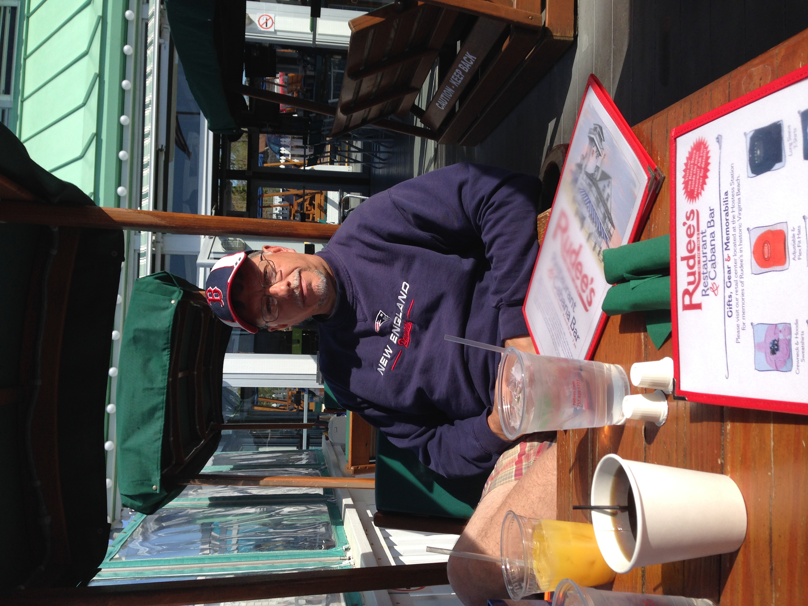

Meet the Photographer
Barry has been serious about photography since he was a child growing up in New England. He now lives in Townsend, Tennessee at the foothills of the Smokies. The Smoky Mountains were one of his biggest reasons for relocating to the area over 30 years ago. His passion for taking photographs led him to a career as a nature and wildlife photographer. His years of research and fieldwork through hiking, backwoods camping, fishing and travel are used on a daily basis and result in a unique style and candid ability to photograph nature and wildlife through the lens of his camera. Barry’s work is available at The Cades Cove Gallery, 7843 East Lamar Alexander Parkway, Townsend, TN 37882. Stop by to take a piece of the Smokies home with you. Available products include framed prints, metal prints, matted photos, Christmas cards, greeting cards, and post cards.